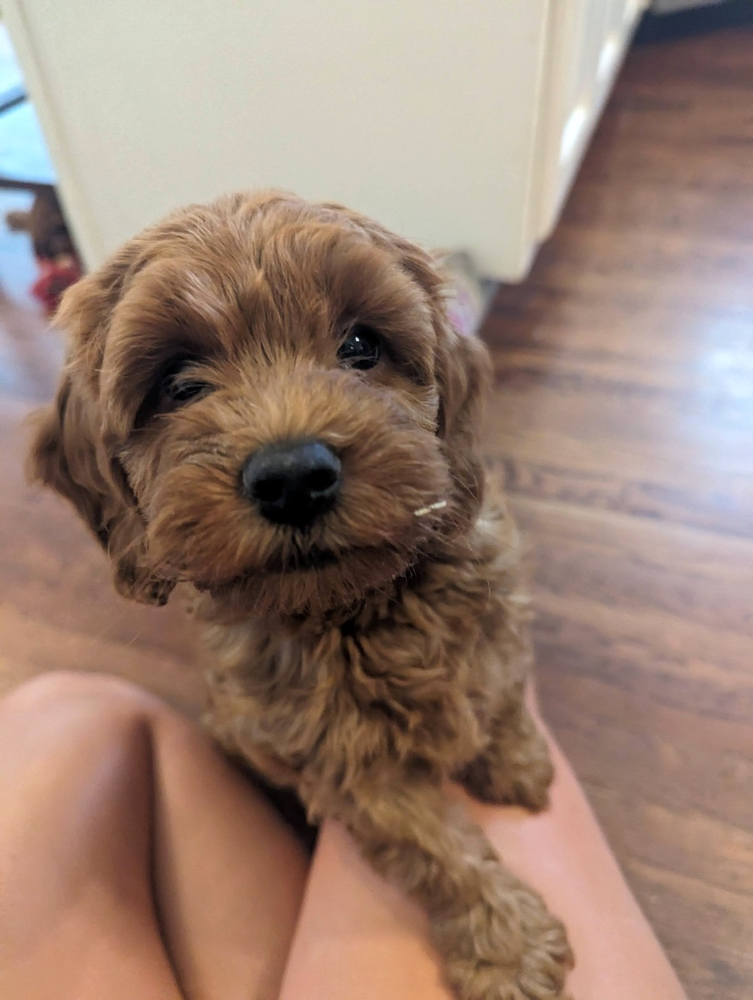
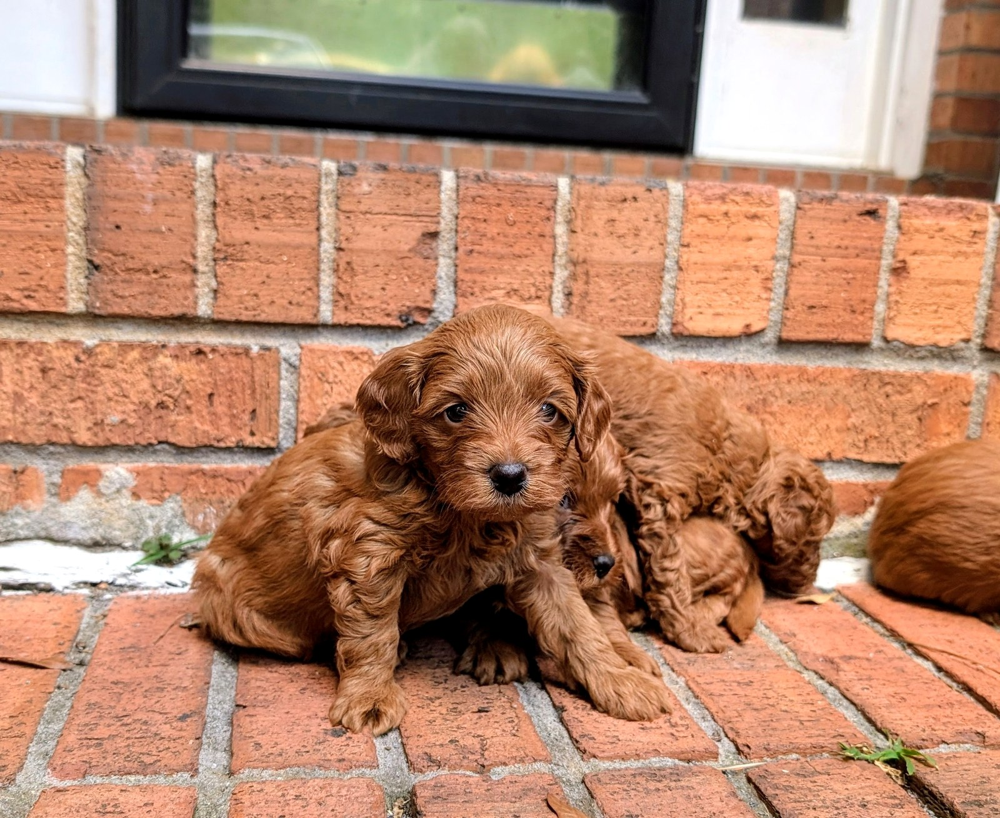
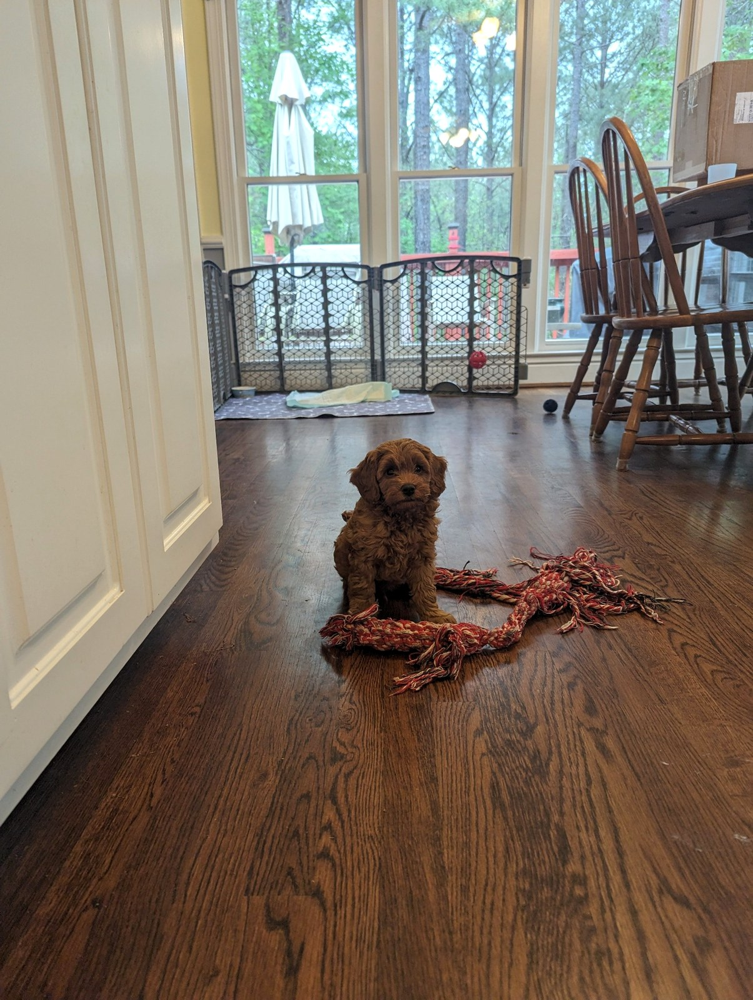

Raised in Our Home
Puppies are introduced to everyday family life from the very beginning.
Welcome to Georgia Cavapoos. We’re so glad you’re here. Choosing a puppy is an important decision, and we’re honored you’re considering our program.



Our focus is simple: healthy parents, loving temperaments, early socialization, and puppies raised with daily care in a home environment.
Puppies are introduced to everyday family life from the very beginning.
We prioritize responsible pairings, veterinary care, and parent health.
Our goal is affectionate, confident companions for loving families.
We want families to feel informed before joining our waitlist.
We’re here for our puppy families beyond go-home day.
The parent dogs are the heart of Georgia Cavapoos. This page will become a beautiful place to share their photos, personalities, sizes, and health information.
Meet Our DogsWhether you’re just beginning your search or ready to join the waitlist, we’d be happy to connect.
Join Our Waitlist